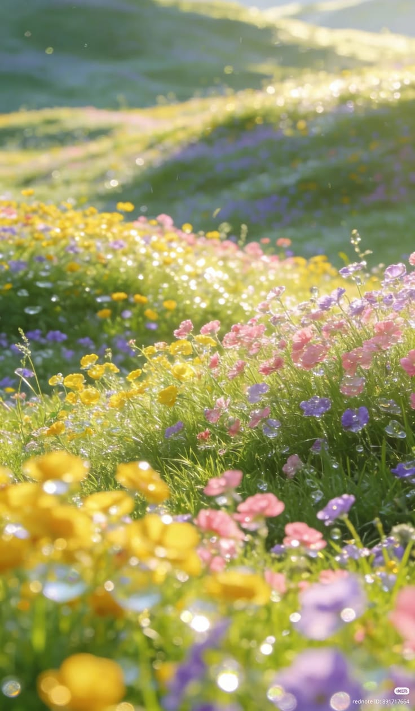
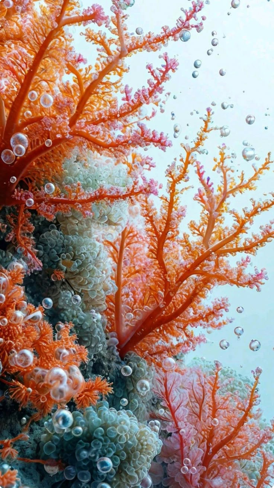

Meet the Elements
Hi, I'm Fern. I tend the quiet undergrowth and know every deer path by heart.
Hello! I'm Wren. I trade gossip with the treetops and carry old songs on the wind.
Hi, I'm River. I've worn these canyons smooth with nothing but patience and time.
Hello! I'm Lark. I rise before the light and chase horizons I never quite reach.
Hi, I'm Moss. I grow slow and low, keeping every footstep the forest forgets.

Hello! I'm Iris. I borrow color from the light and leave it scattered through the meadow.
Hi, I'm Sol. I warm the valley one slope at a time, sunrise to last light.

Hello! I'm Coral. I drift with the current, building reefs from salt and patience.